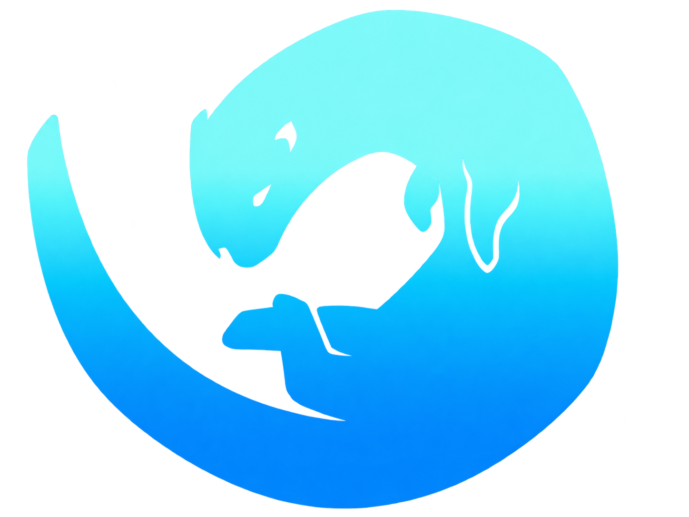

Perfil oficial

/ MÚSICAMúsica✳
Mis canciones, colaboraciones y videos.
Abrir perfil ↗
Videoclips y más
YouTube
Esta página está abierta como archivo local. YouTube solo permite reproducir el video incrustado cuando Música se abre desde una dirección web.
Ver este video en YouTube ↗
Cargando videos del canal…
↗